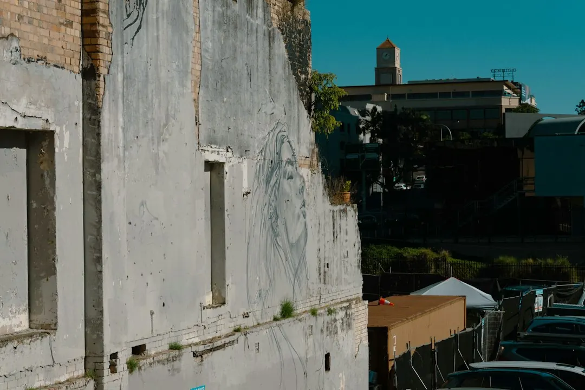

A retaining wall repair in Brisbane should begin with movement, drainage, retained soil, access and nearby loads, not just a damaged sleeper or block. Leaning, bulging, wet soil, blocked weep holes and washed-out backfill can change the required work. Brisbane Retaining Walls advises describing the wall height, material, suburb, access and drainage signs first. Approval questions may arise where a wall is near a building, another wall, driveway, pool or other surcharge.
For homeowners comparing retaining wall repairs brisbane options, the practical decision is whether the site needs a local repair, drainage diagnosis, replacement wall or an engineered approval pathway.
Retaining Wall Repairs Brisbane Explained
Brisbane Retaining Walls asks for the suburb, wall height, material, access and drainage signs before a contractor reviews the likely repair, replacement or quote pathway. That information gives the site discussion a useful starting point, especially where photos are not yet available.
Describe the wall from the bottom and the top. Note whether sleepers are leaning, blockwork is bowed, soil is wet, weep holes are blocked or backfill has washed out. These signs can indicate that visible damage is connected to drainage, failed supports or movement in retained ground. Replacing one board without checking surrounding bays may leave the underlying problem unresolved.
Access belongs in the first enquiry. Narrow side paths, steep yards and nearby structures affect how materials can be carried or unloaded. Include driveways, houses, pools, fences, sheds and neighbouring levels in the site description.
Repair or replace the wall
A local repair may suit a limited problem where remaining posts, sleepers and retained ground are sound. A contractor still needs to assess the affected bay, post condition and drainage before confirming that approach. A decaying base sleeper deserves particular care because it may be holding back soil.
Replacement becomes more relevant when deterioration is widespread, posts have failed, the wall is moving across several bays or wet backfill continues to affect the structure. The replacement discussion should cover material, retained soil, access, drainage, nearby loading and whether an engineered or approval-aware pathway is needed.
- For bowing sleepers, ask whether movement is in the board, posts or retained ground.
- For timber decay, ask how far deterioration extends and whether wet backfill is contributing.
- For failed drainage, ask where subsoil water will discharge after the work.
Approval questions for Brisbane sites
The published guidance identifies one metre as only one part of the approval test. Building approval is not required only where all listed conditions fit: the wall plus retained fill or cut is no more than one metre, there is no surcharge loading, the wall is at least 1.5 metres from a building or another retaining wall, and it is not part of a pool fence.
If one condition does not fit, a private certifier, RPEQ engineer or contractor may need to explain the next pathway before work begins. A driveway, house, pool, shed or another retaining wall above the site can change the assessment. Ask which approval checks apply to the exact block and who is responsible for confirming them.
Do not treat a height estimate as the complete answer. Record the retained level, nearby structures, surcharge, wall separation and proposed drainage outlet for the site conversation.
Choose materials around the site
Material selection should follow the ground, access, drainage and finish required rather than appearance alone. Concrete sleepers with steel posts suit planned drainage and tidy lines. H4 treated timber sleepers may suit low-height garden edges or cost-sensitive replacements. Core-filled besser blocks can support rendered finishes and tight boundaries, but may require careful certification.
Rock and boulder walls depend on drainage, batter and stone selection. Gabion walls suit sites that can accommodate a heavy textured face and free-draining terraces. Engineered retaining systems are relevant where height, surcharge, proximity or pool barriers affect design or approval. Ask for the proposed material, drainage arrangement, design responsibility, access assumptions and price to be confirmed in writing.
Prepare a quote that can be checked
A useful enquiry separates the visible defect from the conditions that may have caused it. Supply the wall material, approximate height, retained soil, access route, nearby structures, drainage symptoms and whether the wall is part of a boundary or pool barrier. Mention previous repairs and any area where water collects or discharges.
For example, a leaning timber wall below a driveway should be discussed as a combined movement, drainage and loading question. Ask whether the posts, base sleeper and retained ground will be examined, whether the driveway represents surcharge, and whether the proposed work needs an engineer, certifier or replacement design. That sequence helps distinguish a board-level repair from a broader wall assessment.
Compare responses on the same questions. Is the recommendation repair or replacement? What excavation and temporary support are expected? How will subsoil water, gravel, geofabric, agi pipe and outlets be handled? Does the site require an engineer, certifier or related approval check? Which assumptions affect the price?
For a broader overview, the retaining wall repair guide for Brisbane properties provides a related reference point. The final scope should still be based on the exact wall, ground and access conditions.
- Record the wall. Write down the suburb, approximate height, material, access route and nearby structures.
- Describe the symptoms. Note leaning, bulging, wet soil, blocked weep holes, washed-out backfill and previous repairs.
- Check the surroundings. Identify driveways, buildings, pools, sheds, fences, other walls and surcharge above the retained level.
- Ask about drainage. Request an explanation of subsoil water, gravel, geofabric, agi pipe and the discharge point.
- Confirm the pathway. Ask whether the recommendation is repair, replacement, engineering, private certification or another approval step.
| Option | More suitable when | Questions to confirm |
|---|---|---|
| Local repair | Damage appears limited and posts, ground and drainage remain sound | How far does movement or decay extend, and will surrounding bays stay stable? |
| Replacement | Posts have failed, deterioration is widespread or wet backfill persists | What material, drainage, access and approval pathway will the new wall require? |
Common questions
Can one damaged sleeper be replaced by itself? Possibly, but the post condition, surrounding bays, retained soil and drainage should be assessed first. A base sleeper may be supporting retained soil, so removal needs a planned sequence.
What signs suggest drainage needs attention? Wet soil, blocked weep holes and washed-out backfill are listed signs that drainage questions should come before a repair price is accepted.
Does a one metre wall automatically avoid approval? No. The listed conditions must all fit, including no surcharge, the required separation from buildings or other walls, and no pool-fence role.
What should be included in a retaining wall quote? Ask for material, height, retained soil, access, drainage, nearby loads, excavation assumptions, design responsibility, approval questions and price to be stated in writing.
This guide covers Brisbane retaining wall repair decisions, drainage questions, material choices, quote preparation and approval-aware site checks.